Use geometric symmetry to balance the composition, highlight the main subject, and create a visually pleasing sense of order.
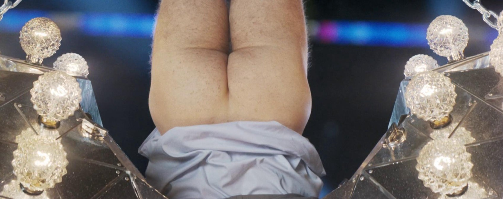
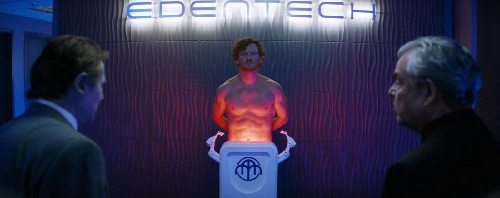
The circular ceiling and identical flanking posters create a perfectly balanced corporate environment.
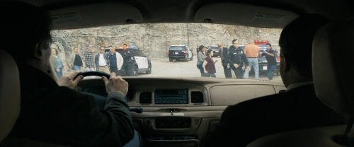
The interior car dashboard and sun visors form a symmetrical frame around the external scene.
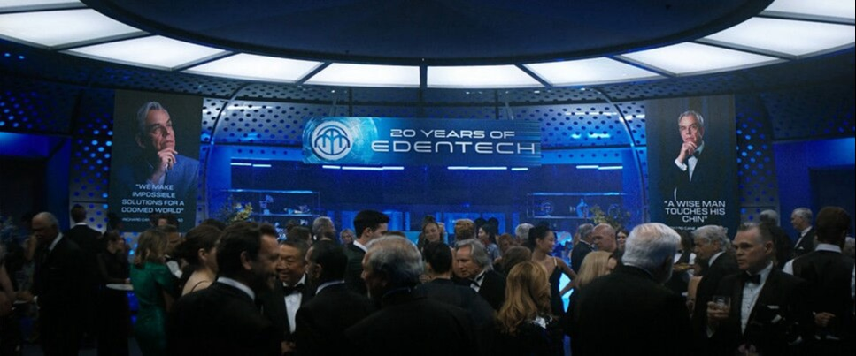
The centered branding and subjects facing each other create a staged, formal balance.
Bird’s-eye
A composition where the camera is positioned directly above the subject, shooting straight down to show the entire layout from a top perspective.
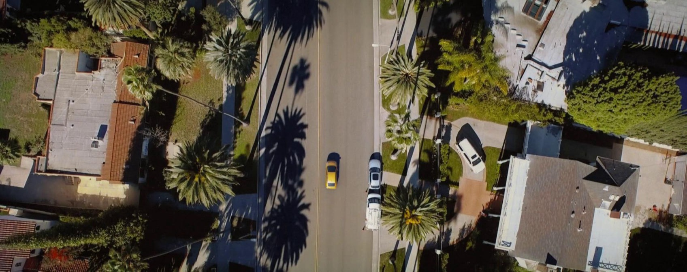
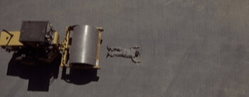
This vertical top-down perspective flattens the steamroller and the person, highlighting their spatial relationship on the uniform ground.
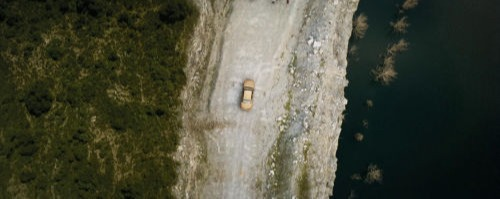
This high-altitude shot looks straight down at the car, making the vehicle and the cliff edge appear like a two-dimensional map.
The camera looks directly down at the wrestling mat, turning the subjects and logos into a flat, geometric arrangement.
Leading Lines
Lines within the image that guide the viewer’s eyes toward the main subject, helping create focus and a sense of direction in the composition.
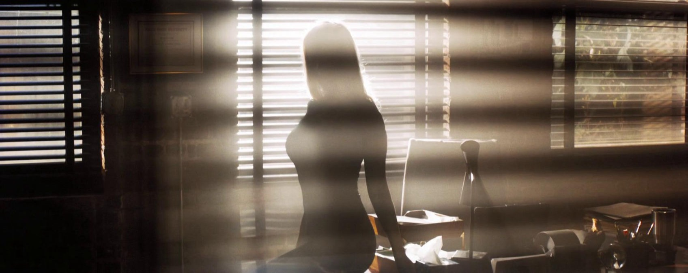
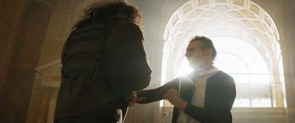
The repeating concentric arches of the architecture serve as curved leading lines that funnel the viewer's attention toward the interaction between the two men.
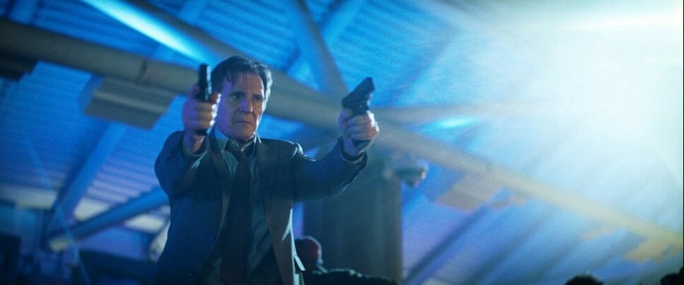
The structural steel beams in the ceiling form a converging radial pattern that points inward toward the central character.
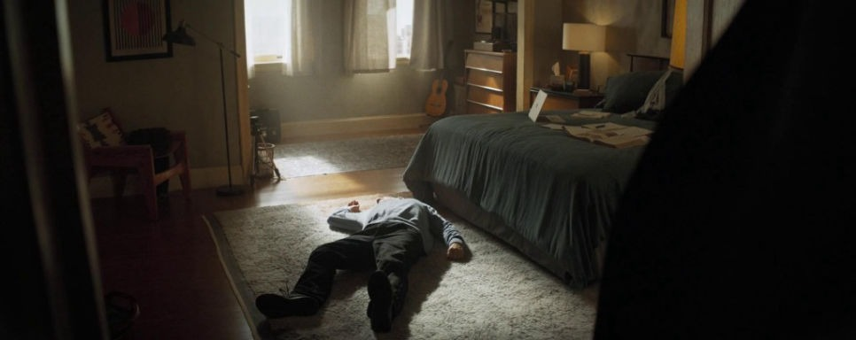
The diagonal edges of the rug and the bedside floor create strong perspective lines that pull the viewer’s eye directly toward the subject on the ground.
Low Angle
A shot taken from a lower position looking up at the subject, making the subject appear larger, stronger, or more dominant.
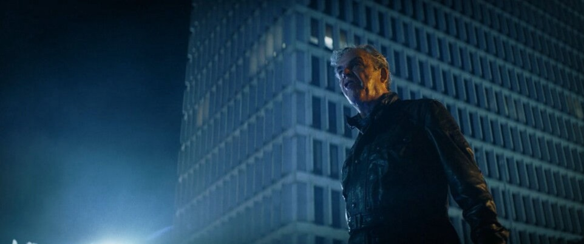
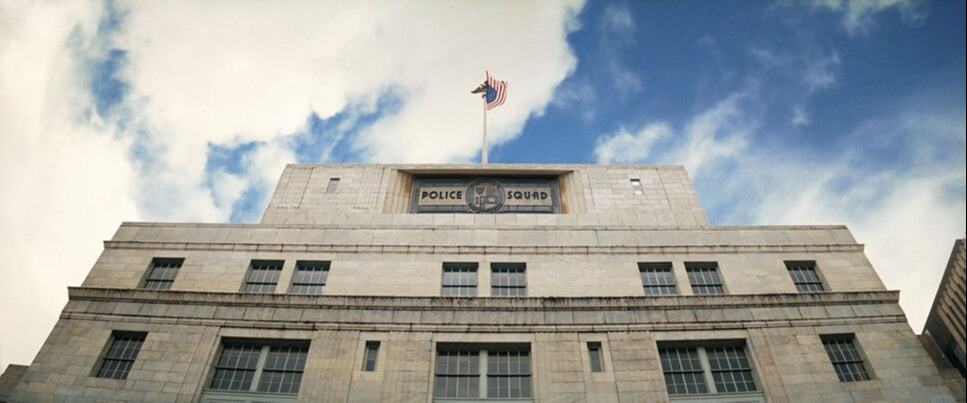
The upward-tilted perspective looks toward the roofline, giving the police building a sense of authority, strength, and monumental scale.
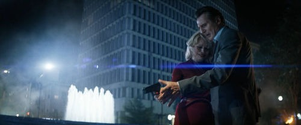
By shooting from below eye level, the camera emphasizes the height of the background building and the emotional gravity of the characters.
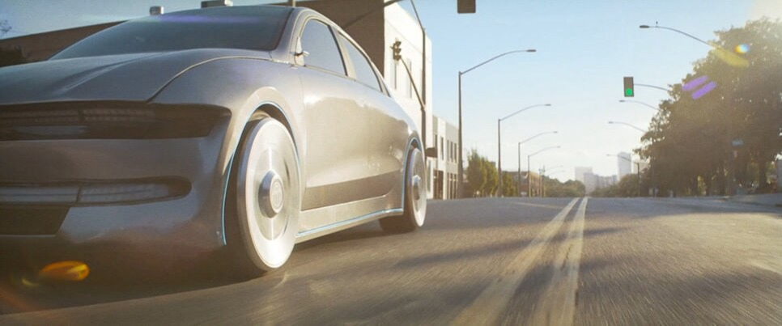
The camera is positioned near the ground, looking up at the car to make it appear more powerful, dominant, and dynamic.